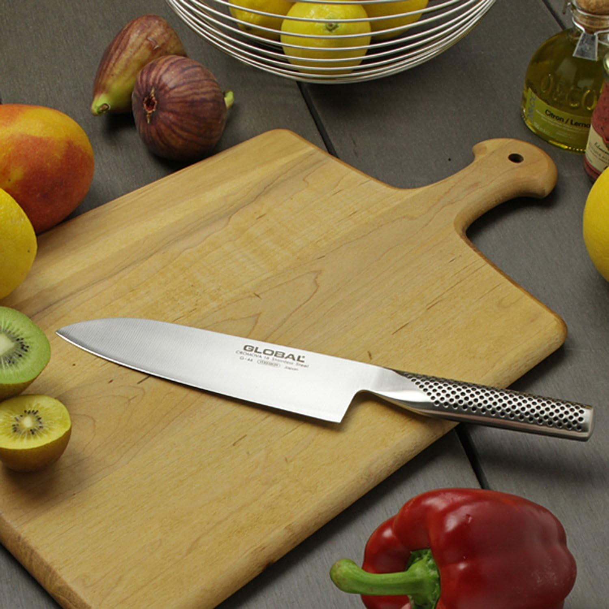

切れない包丁でトマトを押しつぶし、鶏肉の皮を引きちぎる——調理そのものより、道具が言うことを聞かないストレスのほうが台所仕事を億劫にする。かといって、木の柄の付け根に黒ずみが溜まったり、しばらく使わない間に刃が錆びたりするのも面倒だ。「よく切れて、手入れが楽で、長く使える一本」を探すと、候補は意外と絞られてくる。
GLOBAL（グローバル）の G-46 は、刀身と柄が継ぎ目なく一体になったオールステンレス包丁の定番で、公式が「GLOBALシリーズの中でも最も人気が高い」と位置づける三徳18cmだ。1983年の発売以来、国内外のプロ・家庭で使われ続けている。この記事では実機の使用感ではなく、吉田金属工業が公開している公式スペックと公表情報をもとに、この一本がどこまで実用になるのか、そして三徳18cmという選択が誰に向くのかを客観的に整理していく。希望小売価格は12,100円（税込）だ。
GLOBAL G-46とはどんな包丁か
GLOBALは新潟県燕市の吉田金属工業が手がける包丁ブランドで、刃から柄まですべてをステンレスで作る「オールステンレス」設計を早くから採用してきた。G-46はそのラインナップの中心にある三徳包丁で、刃渡り18cm。三徳は肉・魚・野菜のいずれにも使える日本の万能包丁を指し、家庭で一本を選ぶなら最も汎用性が高いタイプにあたる。
刀身と柄が継ぎ目のないオールステンレス一体成型
G-46の最大の特徴は、刀身と柄が溶接や接着ではなく一体で成型され、継ぎ目がないことだ。一般的な包丁は刃と柄の接合部に隙間が生まれ、そこに食材のカスや水分が入り込んで黒ずみや雑菌の温床になりやすい。継ぎ目がなければ、その隙間そのものが存在しないため、丸洗いしても汚れが残りにくく、公式も衛生面での利点を前面に打ち出している。木の柄のように濡れたまま放置して傷むこともない。
CROMOVA18ステンレスとハマグリ刃
刀身にはモリブデン・バナジウムを加えた刃物用ステンレス（GLOBALが「CROMOVA18」と呼ぶ鋼材）を使う。ステンレスでありながら鋼に近い切れ味と、錆びにくさを両立させることを狙った素材だ。刃付けは、断面がゆるやかなカーブを描く「ハマグリ刃」とされ、公式や販売店の説明では食材の刃離れの良さにつながるとされている。柄は18-8ステンレスで、刀身とは別の材質が使い分けられている。

主要スペック
吉田金属工業の公式製品ページに掲載されている値をまとめる。
| ブランド | GLOBAL（グローバル）／吉田金属工業 |
|---|---|
| 製品名・型番 | 三徳 18cm（G-46） |
| 種類 | 三徳包丁（万能包丁） |
| 刃渡り | 18cm |
| 全長 | 31cm |
| 刃幅 | 約5cm |
| 重量 | 175g |
| 刃の種類 | 両刃（右利き・左利き兼用） |
| 材質（刀身） | 刃物用ステンレス（モリブデン・バナジウム入／CROMOVA18） |
| 材質（柄） | 18-8ステンレス |
| 構造 | 刀身・柄が継ぎ目のないオールステンレス一体成型 |
| 刃付け | ハマグリ刃 |
| 生産国 | 日本 |
| 発売 | 1983年 |
| 希望小売価格 | 12,100円（税込） |
スペックから読み取れる、この一本の実力
一体成型がもたらす手入れのしやすさ
継ぎ目のない構造の実利は、日々の後片付けにはっきり出る。刃と柄の境目に汚れが溜まらないため、洗ってそのまま拭けば清潔さを保ちやすい。木の柄のように乾燥や水濡れで割れ・緩みが起きる心配もなく、素材そのものが劣化しにくい。長く使う道具として見たとき、この「接合部を持たない」という設計は、切れ味以上に効いてくる部分だ。ただし後述するように、一体成型でも刃そのものの研ぎは別途必要になる。
ドットパターンハンドルと175gの重量バランス
GLOBALのアイコンでもある柄の点状のくぼみ（ドットパターン）は、金属の柄でも手に馴染み、濡れた手でも滑りにくくするための滑り止めとして機能する。重量は175gで、刃渡り18cmの三徳としては軽すぎず重すぎない範囲にある。重量がある程度あることは、食材にみずから沈み込む力が働くという意味で、押し込む力を減らして切れるという構造上の利点になり得る。一方で、軽い包丁に慣れた人には「やや重い」と感じられる可能性もあり、この重さの評価は好みで割れやすい。
両刃・ハマグリ刃という素性
G-46は両刃のため、右利き・左利きのどちらでも使え、家庭で複数人が使う場面でも扱いやすい。ゆるやかなカーブを持つハマグリ刃は、切った食材が刃に貼り付きにくいとされ、野菜を連続して刻むような作業と相性が良い。三徳18cmという刃渡りは、丸ごとのキャベツや白菜のような大きめの食材にも刃が届きやすく、家庭の万能包丁として過不足の少ないサイズだといえる。
- 継ぎ目のないオールステンレス一体成型。
刃と柄の隙間に汚れが溜まらず、丸洗いで清潔を保ちやすい。木の柄のような割れ・緩みも起きにくい。 - ステンレスながら切れ味と錆びにくさを両立。
モリブデン・バナジウム入りのCROMOVA18を採用し、ハマグリ刃で食材の刃離れにも配慮されている。 - 両刃で右利き・左利きどちらも使える。
家庭で複数人が使う場面でも扱いやすい。 - 滑りにくいドットパターンハンドル。
金属の柄でも手に馴染み、濡れた手でも握りやすい。 - 万能に使える三徳18cm。
肉・魚・野菜に対応し、大きめの食材にも刃が届くサイズ。
三徳18cm（G-46）と牛刀20cm（G-2）、どちらを選ぶか
GLOBALで家庭用の一本を選ぶとき、G-46の三徳18cmと並んで候補に挙がりやすいのが牛刀20cmの G-2 だ。どちらも万能に使えるが、刃の形と長さに違いがあり、向く用途が分かれる。公式値で並べると差がはっきりする。
| 項目 | 三徳 18cm（G-46） | 牛刀 20cm（G-2） |
|---|---|---|
| 型番 | G-46 （この記事の製品） |
G-2 |
| 種類 | 三徳（万能包丁） | 牛刀（シェフナイフ） |
| 刃渡り | 18cm | 20cm |
| 刃先の形 | 先が丸みを帯び、幅広で扱いやすい | 先が細く尖り、切っ先を使いやすい |
| 得意な作業 | 野菜のみじん切り・幅広い日常調理 | 塊肉のスライス・大きな食材 |
選び方の軸はシンプルで、「主に何を切るか」と「キッチンの広さ・慣れ」の二つだ。野菜を刻む機会が多く、家庭料理を一本でこなしたいなら、刃幅が広く先の丸い三徳のG-46が扱いやすい。刃渡り18cmはまな板の上で取り回しやすく、包丁を初めてきちんと選ぶ人が迷いにくいサイズでもある。
一方で、塊肉を薄くスライスしたい、大きな食材を切っ先で処理したい、といった用途が多い人には、刃渡り20cmで先の尖った牛刀のG-2が向く。長いぶんまな板やシンクにはある程度の広さが必要で、細身の刃は野菜の連続カットではやや慣れが要る。迷ったら、家庭料理の万能一本としては三徳（G-46）を基準に考え、肉のスライス頻度が高い場合に牛刀（G-2）を検討する、という順で判断すると外しにくい。今回の記事で購入リンクを掲載しているのは三徳18cm（G-46）のほうだ。
スペックから見える、気になる点・デメリット
単機能の包丁より価格は高い
最初のハードルは価格だ。ステンレス製の三徳なら数千円から手に入るのに対し、G-46は希望小売価格で12,100円になる。一体成型・CROMOVA18・ハマグリ刃といった素材と作りに対する価格であり、「とりあえず切れればいい」という用途なら割高に感じる可能性はある。価格に見合うかは、使う頻度と、長く手入れしながら使い続けるつもりがあるかどうかで変わる。
研ぎのメンテナンスは前提になる
錆びにくいステンレスとはいえ、切れ味は使い続ければ必ず落ちる。一体成型で衛生的なことと、刃が永久に切れ続けることは別で、良い状態を保つには定期的な研ぎ直しが前提になる。GLOBALは有償の研ぎ直しサービスを用意しているとされるが、日常的には砥石やシャープナーでの手入れを自分で行う想定でいたほうがいい。「買えば手入れ不要」ではない点は理解しておきたい。
金属の柄の感触・冷たさは好みが分かれる
オールステンレスは衛生面で強い一方、握ったときの感触は木や樹脂の柄とは異なり、冬場は冷たく感じられることもある。ドットパターンで滑りにくさには配慮されているが、金属特有の握り心地が合うかどうかは人によって評価が割れる部分だ。これは欠点というより素材の個性であり、店頭などで一度握ってから選べると安心できる。
重さ・硬い食材への注意
175gという重量は利点にも好みの分かれ目にもなり、軽い包丁を好む人には重く感じられることがある。また、両刃の万能包丁である以上、冷凍食品やカボチャの芯、骨などの硬いものを無理に断ち割る用途には向かない。刃こぼれの原因になるため、硬い食材には専用の道具を使うのが基本だ。これは三徳包丁全般に共通する前提でもある。
- 数千円のステンレス包丁より価格が高い。
希望小売価格12,100円で、切れればよいだけの用途なら割高に感じる場合がある。 - 定期的な研ぎが前提。
錆びにくくても切れ味は落ちるため、砥石やシャープナーでの手入れは自分で行う想定になる。 - 金属の柄の感触・冷たさは好みが分かれる。
木や樹脂の柄に慣れた人には握り心地が合わないことがある。 - 重さの評価が分かれる。
175gは切りやすさにつながる一方、軽い包丁を好む人には重く感じられる。 - 硬いものの切断には向かない。
冷凍食品・骨・カボチャの芯などは刃こぼれの原因になるため専用の道具を使う。
そもそも三徳包丁でいいか、口コミで確認したい点
包丁を買い替えるか迷う人がまず引っかかるのは「三徳一本で足りるのか」という点だろう。判断基準はシンプルで、普段の料理で何を切るかに尽きる。野菜が中心で、肉も魚も一本で無理なくこなしたいなら、三徳18cmは家庭の万能包丁として過不足が少ない。逆に、塊肉のスライスや大型食材の処理が多い人は牛刀を、パンや冷凍食品を頻繁に扱う人は専用包丁を別に持つ前提で考えたほうがいい。
購入前に口コミで確認しておきたいのは、主に「金属の柄の握り心地をどう感じるか」「重さは自分に合うか」「研ぎの手間をどう捉えているか」の三点だ。これらは使う人の手の大きさや調理スタイル、キッチン環境で評価が割れやすく、スペック表だけでは読み取れない。TechSnapは実機を計測していないため断定はしないが、公式が押し出す設計上の利点（一体成型・CROMOVA18・ハマグリ刃・ドットハンドル）と、自分が包丁に求める条件が噛み合っているかを、購入前に照らし合わせておくとミスマッチを避けやすい。
こんな人に向いている
スペックから見て、G-46がはっきり合うのは「家庭料理の万能包丁を、長く使える一本としてきちんと選びたい人」だ。継ぎ目のない構造で手入れが楽なので、木の柄の黒ずみや衛生面が気になっていた人、包丁を清潔に保ちたい人に向く。両刃で右利き・左利きを問わず使えるため、家族で共有する家庭とも相性が良い。三徳18cmという扱いやすいサイズは、包丁をはじめてしっかり選ぶ人の最初の一本としても素性が良い。
逆に、塊肉のスライスや大きな食材の処理が中心の人は牛刀（G-2）のほうが合いやすく、金属の柄の感触が苦手な人や、とにかく安く切れれば十分という人には、価格と握り心地が見合わないこともある。研ぎの手間を一切かけたくない、という人にも、定期的なメンテナンスが前提になる点で完全には応えきれない。
総評
GLOBAL G-46は、突出した数値スペックで語る包丁ではなく、「よく切れて、手入れが楽で、長く使える万能包丁」という家庭の一本に求められる要素を、継ぎ目のないオールステンレス一体成型という設計で高い次元でまとめた定番だ。CROMOVA18の切れ味と錆びにくさ、ハマグリ刃、滑りにくいドットハンドル、175gのバランスは、いずれも日常の調理を一本で軽くこなす方向に噛み合っている。
一方で、価格は数千円のステンレス包丁より高く、良い切れ味を保つには定期的な研ぎが前提で、金属の柄の感触や重さは好みが分かれる。これらは「素材と作りに投資した道具」の当然の裏返しであり、刺さるのは「衛生的で扱いやすい万能包丁を、手入れしながら長く付き合うつもりで選びたい人」だ。野菜中心の家庭料理を一本でこなすなら三徳18cm（G-46）、肉のスライスが多いなら牛刀20cm（G-2）——この軸さえ外さなければ、価格以上に毎日の台所仕事を軽くしてくれる一本といえる。